Risk graphs — Sunday, November 8, 2026
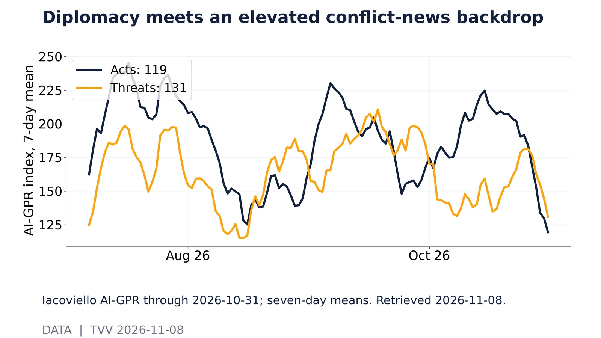
Diplomacy meets an elevated conflict-news backdrop. Iacoviello AI-GPR through 2026-10-31; seven-day means. Retrieved 2026-11-08.Source: https://www.matteoiacoviello.com/ai_gpr_files/ai_gpr_data_daily.csv 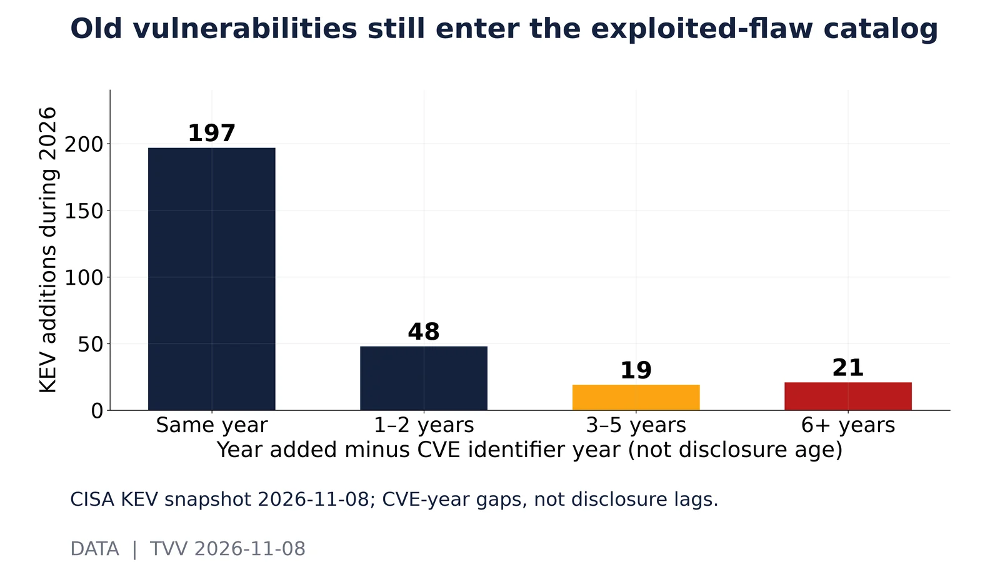
Old vulnerabilities still enter the exploited-flaw catalog. CISA KEV snapshot 2026-11-08; CVE-year gaps, not disclosure lags.Source: https://www.cisa.gov/sites/default/files/feeds/known_exploited_vulnerabilities.json 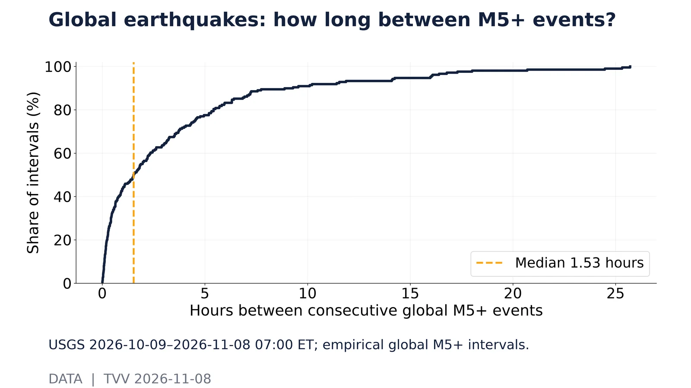
Global earthquakes: how long between M5+ events?. USGS 2026-10-09–2026-11-08 07:00 ET; empirical global M5+ intervals.Source: https://earthquake.usgs.gov/fdsnws/event/1/query?format=geojson&starttime=2026-10-09&endtime=2026-11-08T12:00:00&minmagnitude=4.5 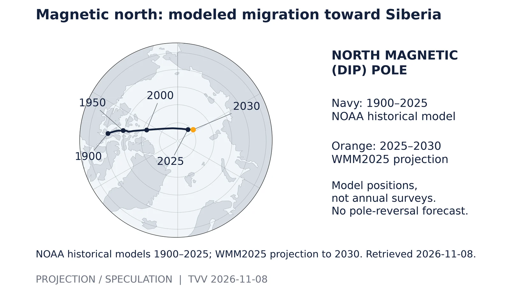
Magnetic north: modeled migration toward Siberia. NOAA historical models 1900–2025; WMM2025 projection to 2030. Retrieved 2026-11-08.Source: https://www.ncei.noaa.gov/products/wandering-geomagnetic-poles 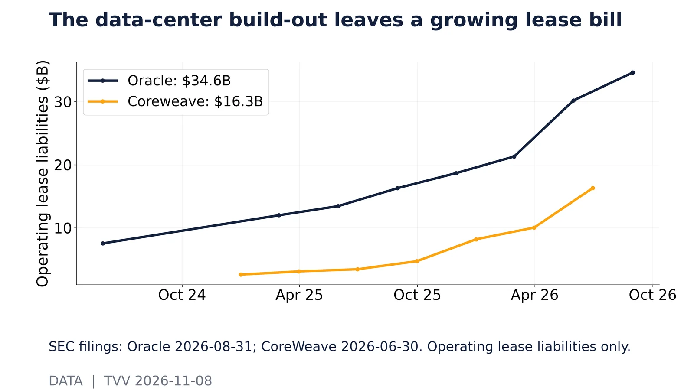
The data-center build-out leaves a growing lease bill. SEC filings: Oracle 2026-08-31; CoreWeave 2026-06-30. Operating lease liabilities only.Source: https://data.sec.gov/api/xbrl/companyfacts/CIK0001341439.json 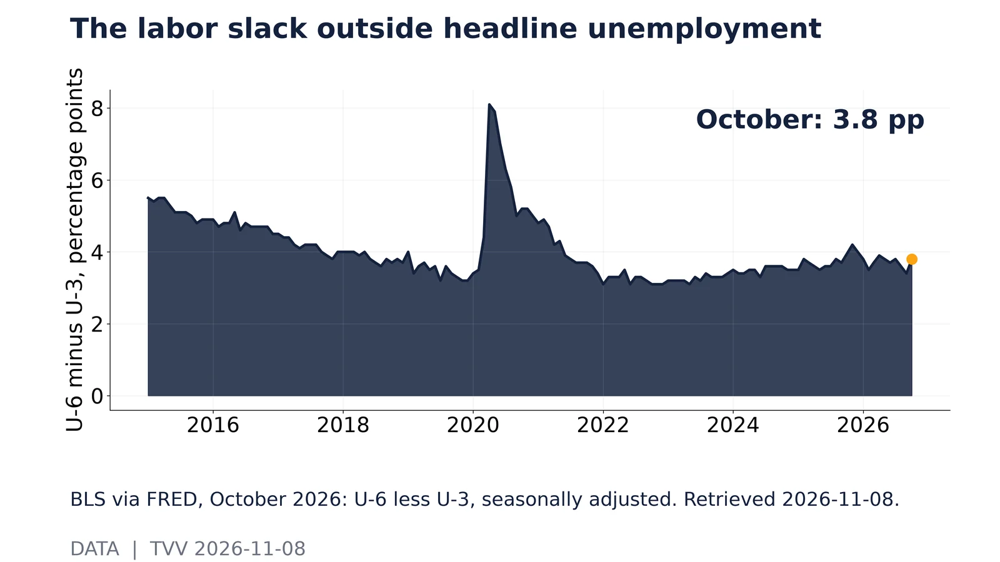
The labor slack outside headline unemployment. BLS via FRED, October 2026: U-6 less U-3, seasonally adjusted. Retrieved 2026-11-08.Source: https://fred.stlouisfed.org/series/U6RATE 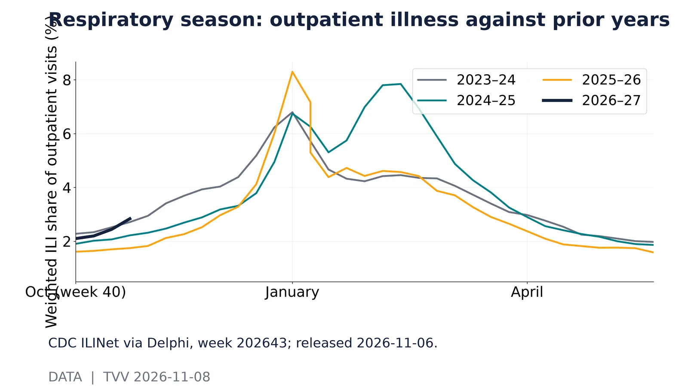
Respiratory season: outpatient illness against prior years. CDC ILINet via Delphi, week 202643; released 2026-11-06.Source: https://api.delphi.cmu.edu/epidata/fluview/?regions=nat&epiweeks=202240-202644 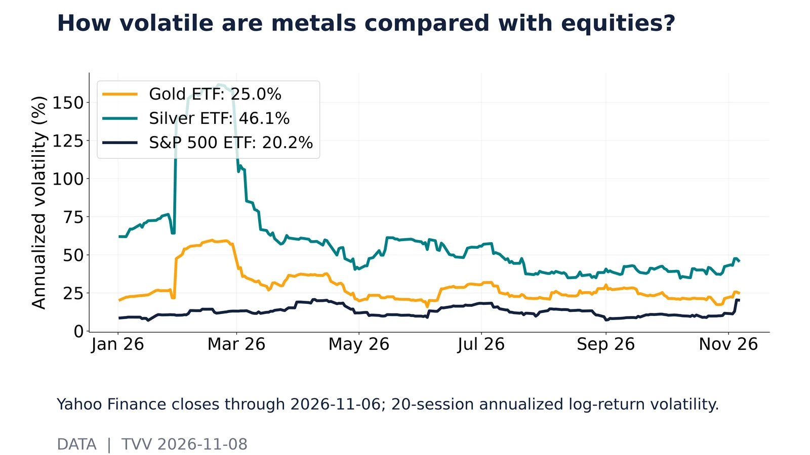
How volatile are metals compared with equities?. Yahoo Finance closes through 2026-11-06; 20-session annualized log-return volatility.Source: https://query1.finance.yahoo.com/v8/finance/chart/GLD?range=1y&interval=1d 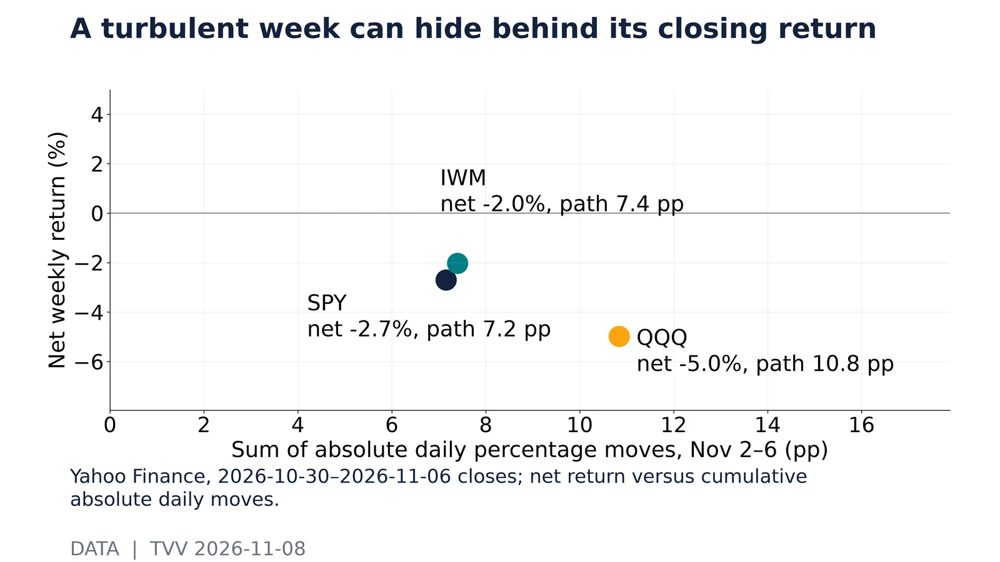
A turbulent week can hide behind its closing return. Yahoo Finance, 2026-10-30–2026-11-06 closes; net return versus cumulative absolute daily moves.Source: https://query1.finance.yahoo.com/v8/finance/chart/SPY?range=1y&interval=1d 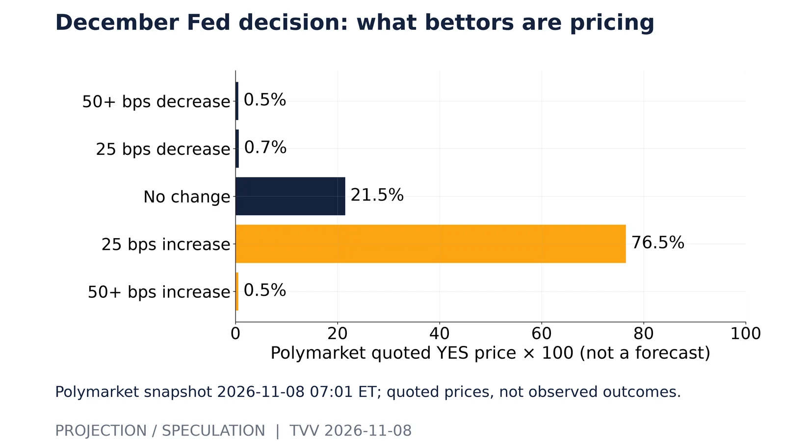
December Fed decision: what bettors are pricing. Polymarket snapshot 2026-11-08 07:01 ET; quoted prices, not observed outcomes.Source: https://polymarket.com/event/fed-decision-in-december-20260729232808632 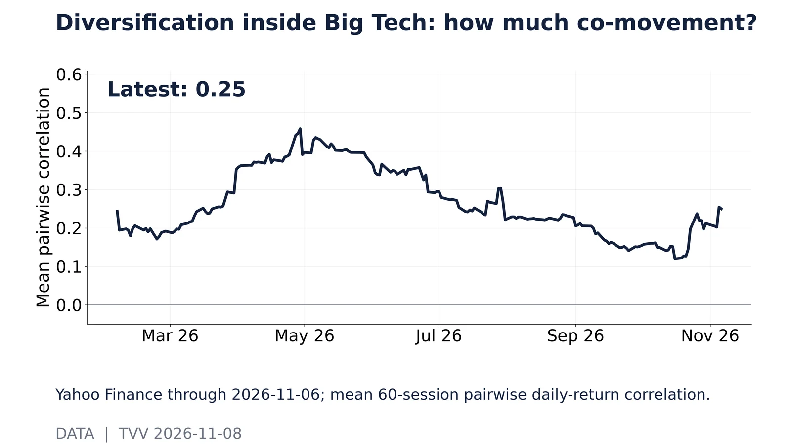
Diversification inside Big Tech: how much co-movement?. Yahoo Finance through 2026-11-06; mean 60-session pairwise daily-return correlation.Source: https://query1.finance.yahoo.com/v8/finance/chart/AAPL?range=1y&interval=1d 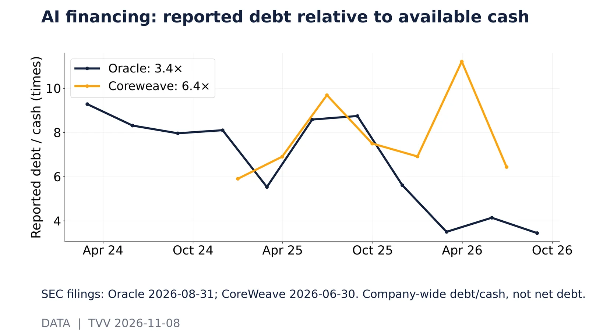
AI financing: reported debt relative to available cash. SEC filings: Oracle 2026-08-31; CoreWeave 2026-06-30. Company-wide debt/cash, not net debt.Source: https://data.sec.gov/api/xbrl/companyfacts/CIK0001341439.json 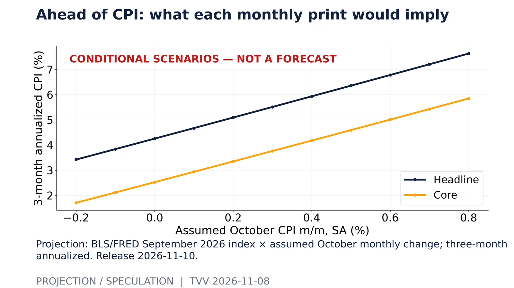
Ahead of CPI: what each monthly print would imply. Projection: BLS/FRED September 2026 index × assumed October monthly change; three-month annualized. Release 2026-11-10.Source: https://fred.stlouisfed.org/series/CPIAUCSL 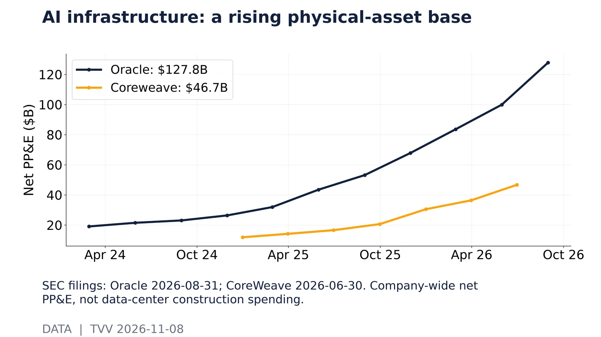
AI infrastructure: a rising physical-asset base. SEC filings: Oracle 2026-08-31; CoreWeave 2026-06-30. Company-wide net PP&E, not data-center construction spending.Source: https://data.sec.gov/api/xbrl/companyfacts/CIK0001341439.json 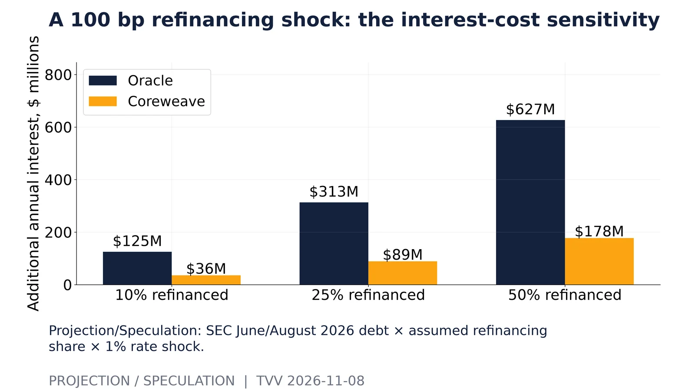
A 100 bp refinancing shock: the interest-cost sensitivity. Projection/Speculation: SEC June/August 2026 debt × assumed refinancing share × 1% rate shock.Source: https://data.sec.gov/api/xbrl/companyfacts/CIK0001341439.json